Cartographic Forest Cover Classification
Systematic ecological investigation distinguishing 7 distinct forest species from strictly non-remotely sensed GIS terrain, soil taxonomy, hydrology, and wilderness boundary indicators.
Environmental Profile & Terrain Separability
Analysis of Roosevelt National Forest 30×30m spatial cells across 7 forest cover types
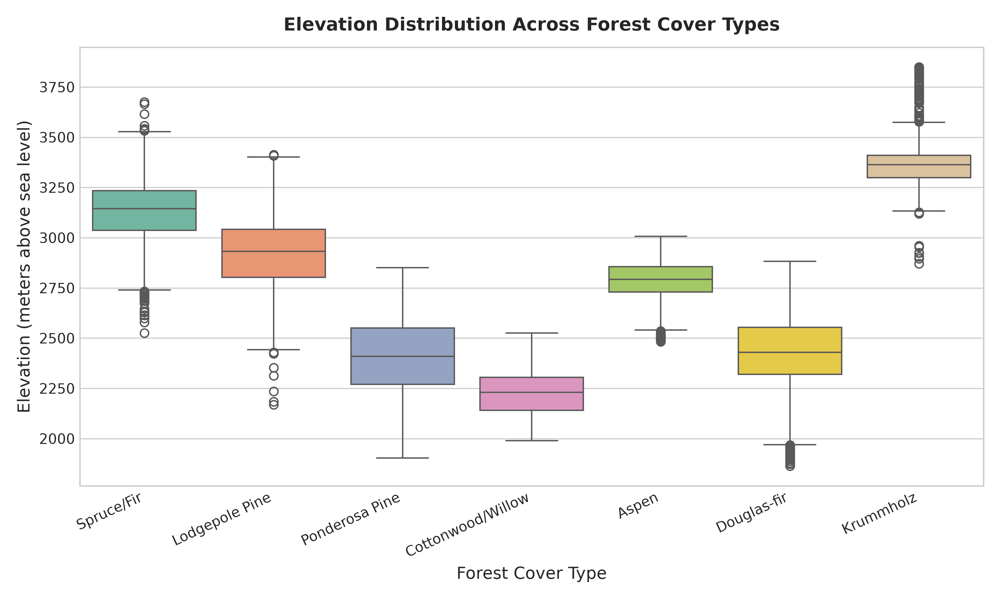
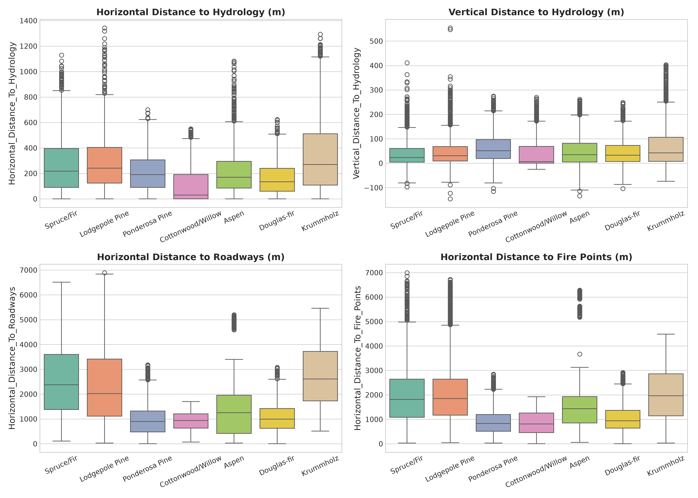
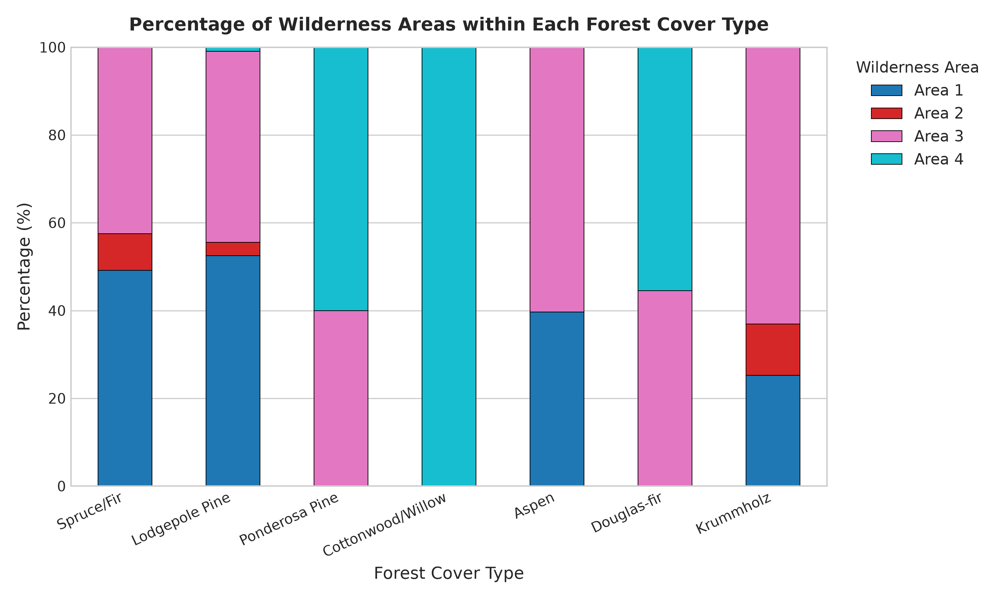
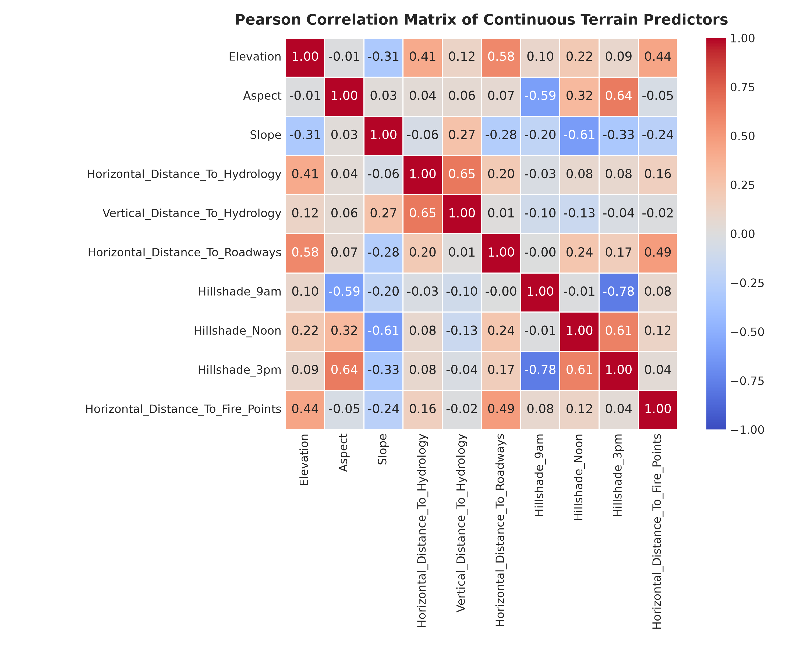
Multiclass Classification Benchmark
Controlled evaluation on identical 20% Stratified Holdout Set (N = 3,024, exactly 432 per class)
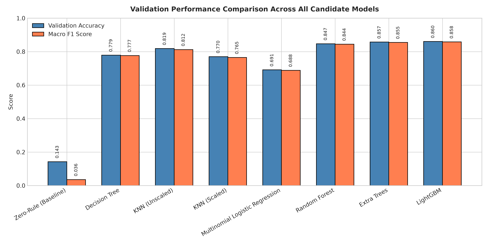
| Model Architecture | Continuous Scaling | Validation Accuracy | Macro Precision | Macro Recall | Macro F1 Score | 5-Fold CV Mean Acc |
|---|---|---|---|---|---|---|
| Zero-Rule Baseline (Majority Class) | None | 14.29% | 0.020 | 0.143 | 0.036 | — |
| Multinomial Logistic Regression | StandardScaler | 69.11% | 0.688 | 0.691 | 0.688 | — |
| K-Nearest Neighbors (KNN, k=5) | StandardScaler | 77.02% | 0.765 | 0.770 | 0.765 | — |
| Decision Tree Classifier (depth=15) | None | 77.91% | 0.776 | 0.779 | 0.777 | 79.15% ± 0.85% |
| K-Nearest Neighbors (KNN, k=5) | Unscaled (Raw) | 81.88% | 0.812 | 0.819 | 0.812 | — |
| Random Forest (300 Trees) | None | 84.72% | 0.844 | 0.847 | 0.844 | 85.56% ± 0.58% |
| Extra Trees Classifier (Selected) | None | 85.75% | 0.855 | 0.857 | 0.855 | 85.98% ± 0.34% |
| LightGBM Classifier (300 Boosters) | None | 86.04% | 0.858 | 0.860 | 0.858 | 86.51% ± 0.45% |
Confusion Matrix & Misclassification Diagnostics
Investigating species confusion, decision boundary margins, and ecological overlap
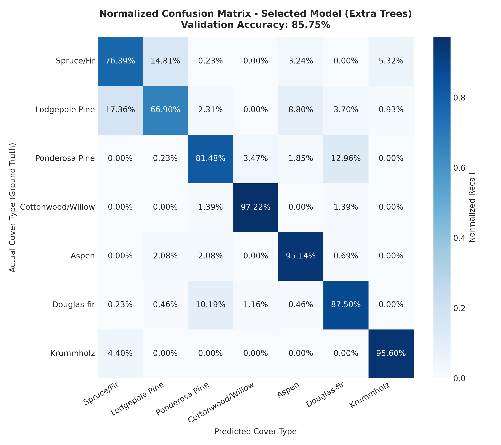
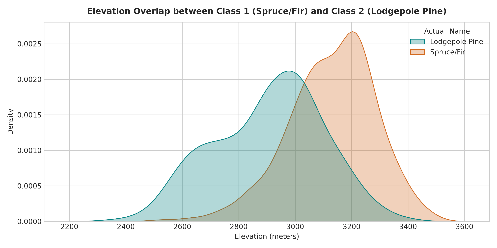
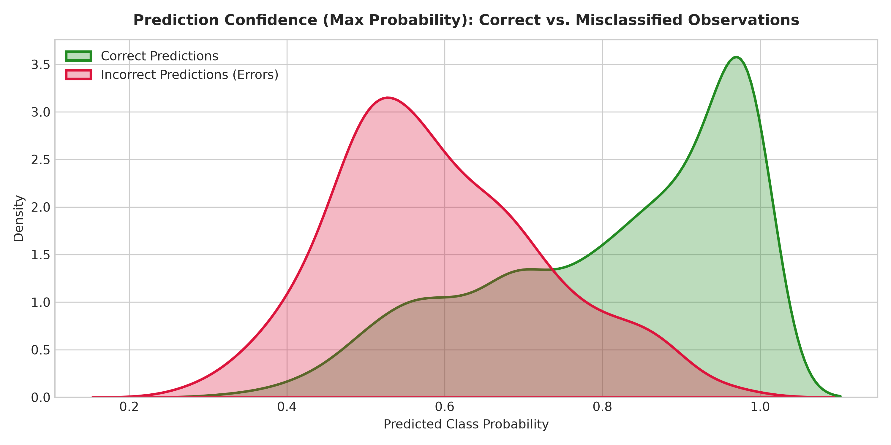
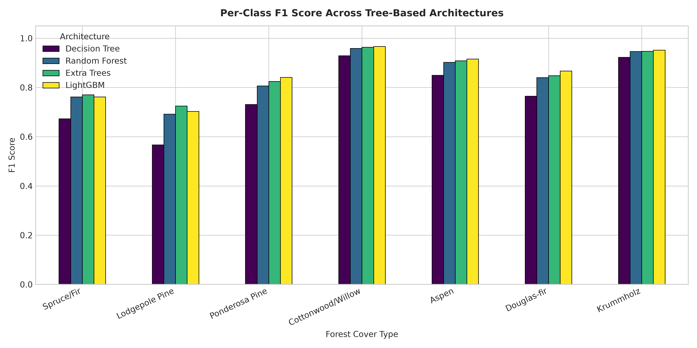
Feature Importance & Model Interpretation
Tree impurity (MDI) and validation permutation sensitivity rankings
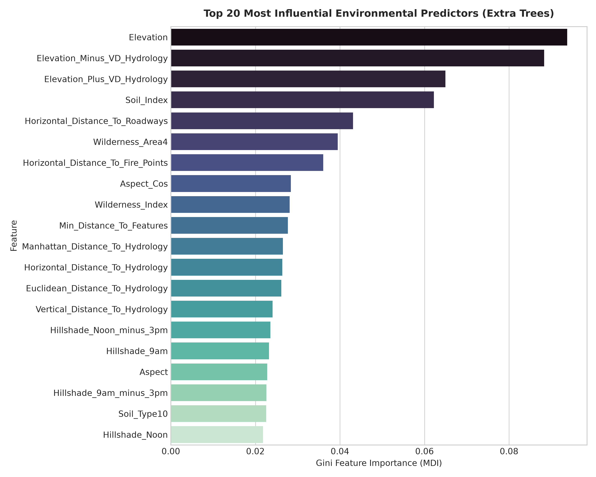
Elevation, Elevation_Minus_VD_Hydrology, Horizontal_Distance_To_Roadways, and engineered Soil_Index emerge as the most influential splits.
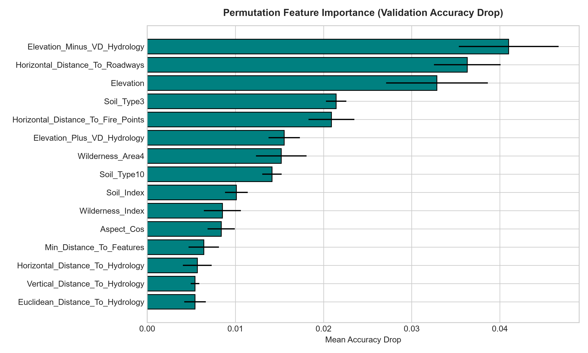
Kaggle Evaluation & Covariate Prior Shift
Explaining the local validation (85.75%) vs. full test benchmark (74.67%) performance
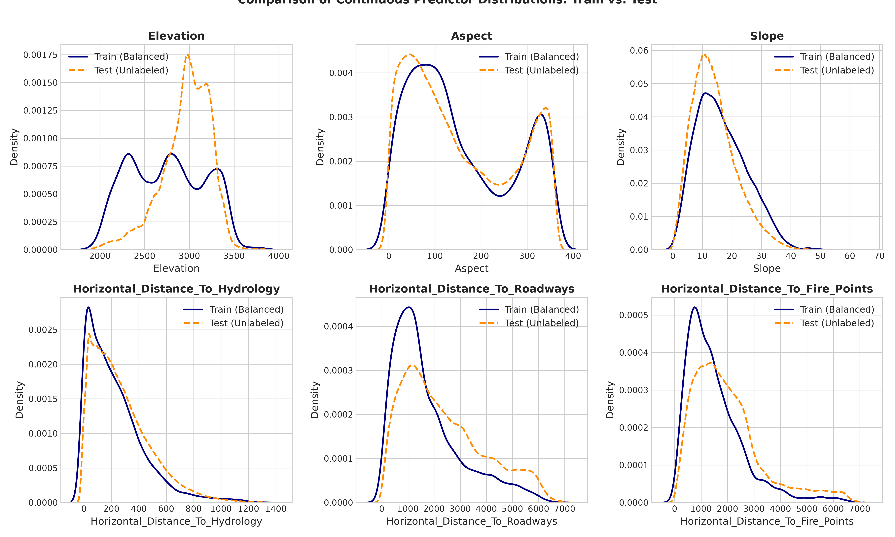
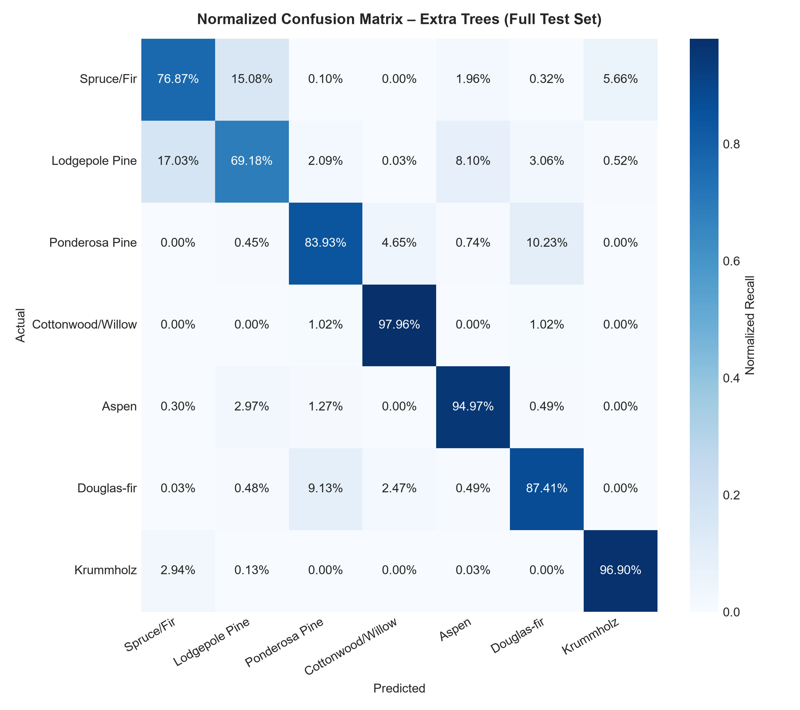
| Class Name | Train Frequency (Balanced) | Test Ground Truth Count | Actual Test Share | Model Test Predictions | Test Set F1 Score |
|---|---|---|---|---|---|
| 1. Spruce / Fir | 2,160 (14.29%) | 209,680 | 37.05% | 209,639 | 0.7688 |
| 2. Lodgepole Pine | 2,160 (14.29%) | 281,141 | 49.68% | 226,572 | 0.7661 |
| 3. Ponderosa Pine | 2,160 (14.29%) | 33,594 | 5.94% | 35,759 | 0.8131 |
| 4. Cottonwood / Willow | 2,160 (14.29%) | 587 | 0.10% | 2,592 | 0.3617 |
| 5. Aspen | 2,160 (14.29%) | 7,333 | 1.30% | 34,174 | 0.3356 |
| 6. Douglas-fir | 2,160 (14.29%) | 15,207 | 2.69% | 26,042 | 0.6445 |
| 7. Krummholz | 2,160 (14.29%) | 18,350 | 3.24% | 31,114 | 0.7190 |
Case Study Research & Reflection Answers
Definitive empirical answers to core case study and methodological questions
Soil_Index (reconstructing the 40 sparse binary soil columns into an ordinal categorical index) and Elevation_Minus_VD_Hydrology (approximating absolute water-surface elevation) contributed the greatest reduction in tree split impurity and permutation error.Kaggle Submission Verification & Integrity
Automated validation checks performed on the generated submission.csv
[CHECK 1] Row count matches test.csv: 565,892 rows (PASSED)
[CHECK 2] Exact required header: Id,Cover_Type (PASSED)
[CHECK 3] Predictor sequence integrity: Id 15121 to 581012 (PASSED)
[CHECK 4] Class predictions range: Integers {1, 2, 3, 4, 5, 6, 7} (PASSED)
[CHECK 5] Null or missing values: 0 NaNs detected (PASSED)
[CHECK 6] File size and format: 5.31 MB, standard UTF-8 CSV without index (PASSED)